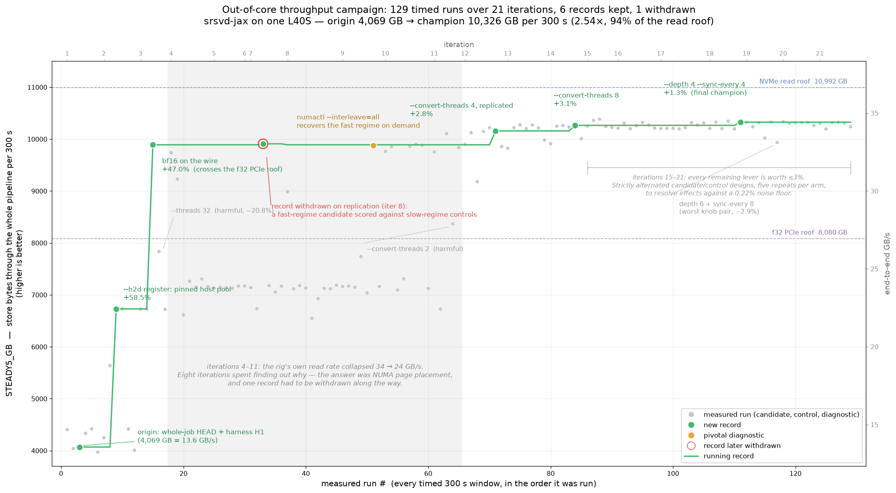

/goal · /make-goal
Running a goal campaign
A goal campaign is Claude Code's /goal loop running against a written contract. The main agent works in iterations. Each iteration it delegates to a few subagents, and it stops when every checkable end state is met.
You need Claude Code with /goal and the /make-goal skill, which turns your prompt into the contract. The goal-cast and delegation-guard templates are optional.
- make-goal skill
- goal-cast/ templates
- delegation-guard.md template
- goal-campaign this guide on GitHub
# install /make-goal
git clone https://github.com/carbonscott/make-goal
mkdir -p ~/.claude/skills/make-goal
cp make-goal/SKILL.md ~/.claude/skills/make-goal/SKILL.mdThis guide climbs four levels. Start at level 0 and add a layer only when the campaign needs it.
What goes into the /make-goal prompt at each level. Each level keeps everything below it.
What /goal does
/goal is a built-in Claude Code command that runs Claude in a while loop:
/goal <condition>
while judge(condition, conversation) == "not yet met":
Claude works another turnYou write the condition in plain English:
/goal all tests in tests/ pass and the README documents the new flagNormally Claude stops when it decides a task is done. With a goal set, a second model decides instead. After each turn, Claude Code sends the condition and the conversation so far to a small, fast model (Haiku by default). This judge returns one of three verdicts, each with a short reason:
- Not yet met: Claude starts another turn and uses the reason as guidance.
- Met: the goal clears and the loop ends.
- Impossible: the goal clears and the reason is recorded.
A real “not yet met” reason, from a campaign:
Seven of eight done_when conditions are met [...]. The eighth condition [...] is not met.
The judge does not call tools. It can't open files or run commands, so it can only judge what Claude has printed in the conversation. This is why a goal campaign prints its progress every turn. The ledger file on disk holds the full record, but the judge never reads it. It reads the short ledger digest that Claude prints at the end of each turn. Everything printed costs the main model output tokens and stays in its context, so the digest is kept to one line per iteration.
/goal clear stops a goal early. If a subagent or background command is still running when a turn ends, the judge waits and checks at the end of a later turn. Details are in the Claude Code docs.
Minimal
A minimal campaign has three parts:
/goal- a prompt that states the goal
- a budget as two ranges: X agents per iteration (e.g. 2–4) and Y iterations (e.g. 3–9)
The budget is given as ranges so the main agent can choose within them as it learns more during the campaign.
Step 1 — write the contract
Run /make-goal in plan mode (shift+tab). Plan mode explores the project before drafting, so the contract uses what is already there.
State the budget and the delegation tool yourself. If you leave them out, /make-goal falls back to its defaults: 2–5 agents per iteration, 3–9 iterations, and the Agent tool.
A real level-0 prompt:
/make-goal i have a loose goal of knowing the areas of interests in quantum
material research. you have access to @.externals/preprint_servers.json.
Please work on reseaching these preprints [...]. You should work in
iterations, and the budget is 3-9 iterations. You can use 4-8 subagents
(opus 5.5 at medium) per iteration, and launch them using Workflow tool over
Agent tool. The whole exploratory happens inside @quantum-materials/From a literature survey that met its goal in 3 iterations.
Why “Workflow tool over Agent tool”: the Agent tool can set only the model. Reasoning effort (“at medium”, “xhigh”) can be set only through Workflow.
/make-goal interviews you for anything missing, then shows a draft. Nothing is written until you approve. It writes three files:
.goal/<slug>.jsonis the contract. Its key part isdone_when, a list of end states. Each one carries its own proof. From the example above:Every cited preprint ID is real, proven by printing the final-turn output of
python quantum-materials/verify_citations.py, showing [...]cited IDs: N | found in corpus: N | missing: 0with N ≥ 18..goal/<slug>.ledger.jsongets one entry per iteration: what was delegated, and what is new..goal/<slug>.claims.jsonholds the campaign's key claims, each taggedverified,inheritedorinferred.
The /goal evaluator reads only conversation text. It cannot open files. So every end state must be something the agent prints. The ledger digest printed each turn is what makes your iteration range enforceable:
LEDGER qm-preprint-landscape — iterations 3/3, full at .goal/qm-preprint-landscape.ledger.json
1 · delegated:6 · new: ...
2 · delegated:7 · new: ...
3 · delegated:7 · new: ...Step 2 — run it
Start from a clean context and paste the command /make-goal printed:
/clear
/goal work until all done_when conditions are met in @.goal/<slug>.jsonStep 3 — read the result
Open the claims file and read the inferred and inherited claims first. Those are the ones nobody re-checked.
Level 0 is enough for most work. Of the author's first 18 campaigns, 17 used nothing more and met their goal.
Resource pointers
What a resource pointer is
A resource pointer is a file of checked facts about where things are and how to reach them. It covers things like remote hosts, cluster accounts, data locations, service APIs, logs, and the commands that read them. You reference it with @file in the prompt, and every agent can read it when it needs to.
Why it helps an autonomous run
- No one is there to ask. During a campaign you are not in the loop. Any fact the agent lacks becomes a guess, or an iteration spent finding it out.
- Subagents start cold. Each subagent begins with no context. A pointer file gives every one of them the same map in a single read.
- It carries over. Cluster and data facts rarely change between campaigns. Write them once, check them once, and reuse the file.
- It keeps the prompt about the goal. Facts that don't change live in the file. What is specific to this campaign stays in the prompt.
Examples
Three real pointer files, trimmed. Each is long, so only a few entries are shown.
Preprint servers
.externals/preprint_servers.json, from the literature survey in Level 0. For each server: which API to call, what format it returns, and how often it may be called.
{
"notes": [
"Endpoints change. Run a health check (one small request per endpoint)
before relying on this file in production.",
"Respect each server's terms of use and rate limits; send a descriptive
User-Agent with a contact email."
],
"servers": [
{
"id": "arxiv",
"access": {
"method": "native_api",
"search_api": "https://export.arxiv.org/api/query?search_query=all:{query}&start=0&max_results=50",
"search_api_format": "Atom XML",
"auth_required": false,
"rate_limit_note": "Roughly one request every 3 seconds; see API terms of use."
},
"materials_science_categories": ["cond-mat.mtrl-sci", "cond-mat.soft", "cond-mat.supr-con"]
},
{
"id": "biorxiv",
"access": {
"rate_limit_note": "No keyword search endpoint; the API lists by date
range or DOI. Use Europe PMC or OpenAlex for keyword search."
}
}
[... 20+ more servers ...]
]
}Beamline resources
xpp-resources.json, from an investigation of a detector incident. Which command to trust, and which obvious shortcut gives the wrong answer.
"how_many_events_did_run_N_have": "NOT ANSWERABLE FROM ANY LOG ON THIS
HUTCH. Verified absent. Use the eLog (skills.elog_search). [...]",
"find_the_current_experiment": "`get_curr_exp -i xpp` -- verified working
standalone, returned xpp102087827 on 2026-09-20. USE THIS, not directory
mtimes: `ls -dt [...]/xpp1*` puts xpp101921427 first [...] even though the
active experiment was xpp102087827 -- directory mtimes on XPP are
misleading."Cluster facts
s3df.setup.json, from the srsvd-jax campaigns. How to use the batch system without losing a hard-won allocation.
"submission_pattern": "Hold the allocation once with `salloc --no-shell`, then
drive steps into it with `srun --jobid=<id>` as many times as needed -- a
failed step is another srun, never a re-queue. [...] Do NOT use sbatch, and
do not drop and re-request the allocation between retries."All three say when or how each fact was checked, and name the wrong move as well as the right one. An entry like “NOT ANSWERABLE [...] Verified absent” saves an agent from spending an iteration searching for something that isn't there.
Write facts you have checked, and say when you checked them. Agents act on these files without questioning them. So a stale path costs a whole iteration.
Pointing to resources in the prompt
Reference a pointer file with @file anywhere in the prompt, and say what it is for:
We did diagnosis based on the resource pointers in @xpp-resources.json and
produced a report in @xpp-epix100-incident-2026-09-21.html.
[...]
The orchestrator agent should have access to @xpp-resources.json, these are
the resource pointers.From the detector incident investigation, which met its goal.
You need information about the remote login nodes (which can connect you to
compute nodes through slurm), and it's in @.ai/s3df.setup.json.From the two-node srsvd-jax campaign.
You can also ask the campaign to build its own pointer file as it goes. The single-node throughput campaign asked for one, and the agents kept <slug>.setup.json up to date. They moved each fact from inherited to verified once they had checked it on the node.
You need to collect setup information you need to run the campaign - remote,
remote storage (wekafs, nvme, etc), bridge, slurm, data. Data can be
artificially generated on disk.From the single-node srsvd-jax campaign (the worked example in Level 3). “Bridge” is cc-bridge, the author's tool for working on remote hosts over SSH.
Two more inputs are worth pointing to in the prompt:
- A handoff doc from an earlier session. For example, “read .ai/handoffs/merge-dist-harness-to-main.md”.
- An earlier contract, when this campaign continues one. For example, “We have done a good campaign associated with @../runtime-b/.goal/srsvd-ooc-throughput.json.”
Goal-cast
A goal-cast gives each iteration a fixed shape: named roles, each with a model, an effort level, and a cadence. Paste it after your goal. Fill in the [slots] and delete any role you don't need.
| Cast | Use when | Example in this guide |
|---|---|---|
| advisor-worker | general default: plan, do, then attack the result | the trimmed cast below |
| implementer-runner | a number is the goal, measured against a champion | the srsvd-jax campaign (Level 3) |
| reviewer-fixer | a PR must reach a clean review | landing a PR, below |
Advisor-worker
The shape, trimmed (see the file for the full text):
<goal-cast>
<orchestrator>
You are the orchestrator. Each iteration: think, decompose, delegate,
integrate, ledger. Every decision is yours — advisors advise [...]
Prefer the Workflow tool over the Agent tool whenever Workflow is available.
</orchestrator>
<advisor name="planner" model="[fable]" effort="[xhigh]"
cadence="iteration 1; any iteration that changes direction [...]">
Consulted BEFORE a decomposition is committed [...] Run a pre-mortem [...]
</advisor>
<advisor name="skeptic" [...] cadence="every iteration that produces a
measurement or claim">
Consulted AFTER results, BEFORE belief [...] Verdict per claim: BELIEVE, or
QUARANTINE with the reason.
</advisor>
<workers model="[opus]" count="[2-4] per iteration [...]" effort="[xhigh]">
Return evidence, not conclusions [...]
</workers>
<worker name="cold-reader" [...]>
Given the deliverable and NOTHING else [...] attempt to use it end to end.
</worker>
<discipline>
- Predict before you measure [...]
- Quarantine has teeth [...]
</discipline>
</goal-cast>Advisors count toward the per-iteration budget. So an iteration that brings in the planner and the skeptic has fewer slots left for workers.
Implementer-runner: beating a performance record
Implementers write candidate changes. One runner measures every candidate next to the current champion, re-measured in the same iteration. A candidate becomes the new champion only if it wins by more than the noise floor.
The single-node srsvd-jax campaign used this cast. You can tune a cast for one campaign without touching the template. Here the user changed the implementer count and added a setup phase after seeing the draft:
- The orchestrator can spend 1-3 iterations to set up the campaign like
generating data for the campaign on nvme.
- Originally, it's 1 implementer per iteration, but you can have 1-3
implementers (opus, xhigh) per iterations in case the change is large (do
not change the base goal cast json, but in the campaign specific goal cast
json)
- Use 4 bridge session max to mitigate contention from subagents and main
agent.From the srsvd-jax campaign in Level 3. The champion reached 2.54× the starting throughput, at 94% of the one-GPU read limit.
Reviewer-fixer: landing a PR
Each iteration a fresh reviewer reads the PR, fixers close the findings in parallel, and a verifier checks that nothing the tests miss has broken. The prompt can be as short as the goal:
/make-goal <main>
you decide how many PRs, but I want to merge them, since we have identified a
champion now.
</main>
<goal-cast>
[reviewer-fixer, slots filled]
</goal-cast>From a campaign that merged the two-node srsvd-jax benchmark code. In 3 iterations it took the change to an APPROVE verdict from a fresh reviewer. GitHub won't let an author approve their own PR, so the verdict was posted as a comment. The user then authorized the merge.
Delegation guard
When many agents run at once, or a worker processes a long list, one looping agent can cost many times what the rest cost together. In one real case, one of three sibling agents looped for 1,160 turns, wrote nothing, and cost ~60× what the other two did.
Paste delegation-guard.md after the goal-cast. It tells the orchestrator to:
- Poll transcript sizes (not wall-clock time) on a fixed schedule.
- Question any agent that is past a size cap or 3× the size of its siblings.
- Stop agents that are going in circles.
- Give every worker a batch size, so an agent that writes no output shows up as a failure early.
The part that prevents most problems is the batch rule. Every worker gets it:
"Work in batches of about [12] items. For each batch: read the [12], write
results for every id, and append to [output file] before starting the next
batch. Never read your whole list before writing anything. [...]"The full level-3 prompt is laid out like this:
/make-goal <main>
...goal, budget, "Workflow over Agent", @resource pointers...
</main>
<goal-cast>
...a cast from goal-cast/, slots filled...
</goal-cast>
<delegation-guard>
...delegation-guard.md, slots filled...
</delegation-guard>The <main> tags are optional. They only make it easier to tell your goal apart from the pasted templates; /make-goal reads the prompt the same way without them.
Worked example: maximizing srsvd-jax throughput
This campaign set out to beat the best steady-state throughput of srsvd-jax (a randomized SVD library written in JAX) on one GPU, with a dataset twice the size of host memory. The prompt, with details trimmed:
/make-goal
we have done a lot of work to improve the performance of srsvd-jax (right
now, codebase at @work/srsvd-jax at the whole-job branch, which was a result
of running the @.goal/srsvd-whole-job.json campaign). [...] I wrote down my
lessons in @.ai/research/performance-optimization-method.json. [...]
you could easily get some gpu node (called ada node) allocation [...]. you
should be able to get even exclusive node (full memory, full CPU, and full
GPU, the whole node) easily, and I suggest you do that unless the node
becomes super busy.
You need to collect setup information you need to run the campaign - remote,
remote storage (wekafs, nvme, etc), bridge, slurm, data. Data can be
artificially generated on disk.
SRSVD-JAX uses JAX heavily, so you might want to do some specific deep dive
into the JAX repo [...] before you even plan what to do.
The specific scenario I want to optimize is the out of core scenario, where
data are much larger than not only the GPU memory on a single GPU card, but
the host memory too. We should consider using one synthetic data set which
is 2X host memory.
[...] the goal should really be beating the previous best record across.
[...] We should really measure a steady state throughput (excluding cold
start like compilation, for example). Let's give it a finite budget of 5
minute steady state, and meausre how much data have been processed through
the end-to-end pipeline.
Please run it for 100 iterations.
In each iteration, please follow @.goal/base.goal_cast.json. Actually, leave
this base goal cast file alone, also create your own goal cast file for this
campaign specifically.
<delegation-guard>
[... delegation-guard.md, slots filled ...]
</delegation-guard>What each part of the prompt does:
- Two goals in one campaign. “Beat the previous best record” can't be promised, so the contract turned the prompt into two goals that are within the agent's control:
- Run 100 iterations. This is a
done_whenitem like any other: the printed ledger digest must showiterations N/100with N ≥ 100. - Report the best record, whatever it is. The record is data processed in a 5-minute steady-state window. The contract says: “If no candidate ever beat the origin, THAT IS THE FINDING.”
/make-goalcontract has an iteration floor like this (3 by default). Here it is set high enough to be the real finish line. - Run 100 iterations. This is a
- Resource pointers are the earlier contract, the method notes, and the instruction to collect a setup file.
- The goal-cast is an earlier JSON version of implementer-runner. After seeing the draft, the user tuned it with a follow-up message (quoted in Level 2).
- The delegation guard is pasted in full, because each iteration runs long GPU jobs.
Result: the champion reached 2.54× the starting throughput, at 94% of the one-GPU read limit. The scoreboard ends at iteration 21 of the 100 requested, so this is the best result reached, not a finished 100-iteration run.
{kind=link}

All three blocks together have also paid off for registering 32 public datasets in parallel, and for adding many API routes with 2–4 agents per iteration.
Short reference
- Install
/make-goal. Run it in plan mode. - State one goal or several. When “done” is hard to define, make a fixed number of iterations one goal, and a report that is due either way another.
- State the agent budget and “Workflow over Agent” in the prompt.
- Approve the draft, then
/clearand paste the/goalcommand. - Read
inferredandinheritedclaims first. - Add levels only as needed: resource pointers when agents can't reach something, a cast when results need checking, a guard when agents run at scale.
- Split big work into chained campaigns. For example, the single-node throughput campaign, then the multi-node campaign that built on it, then a merge campaign that landed the result.